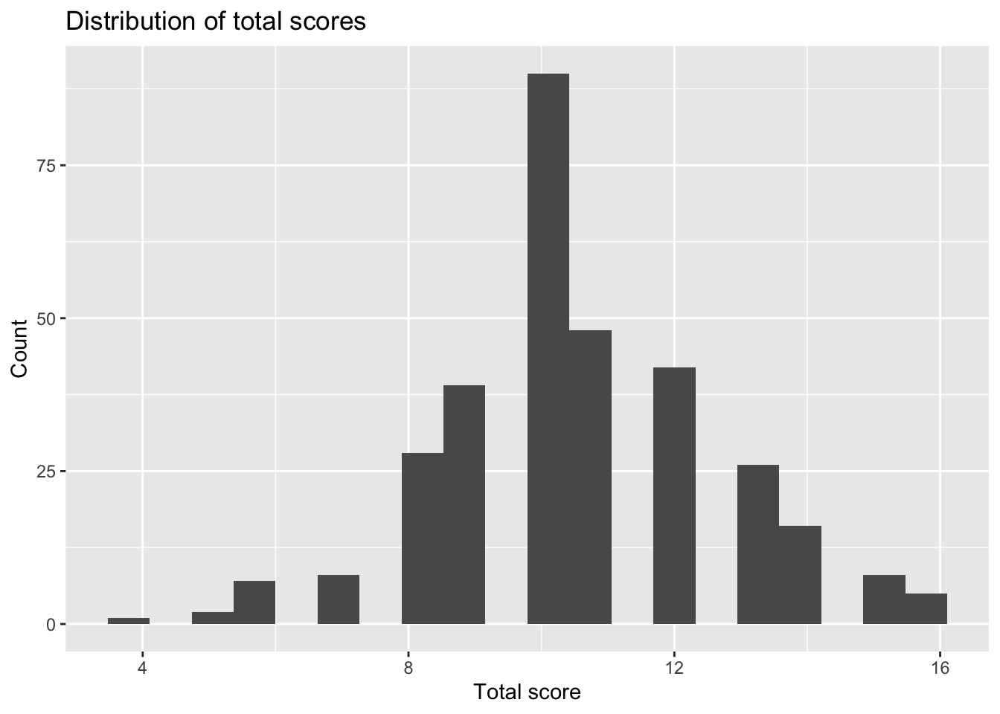
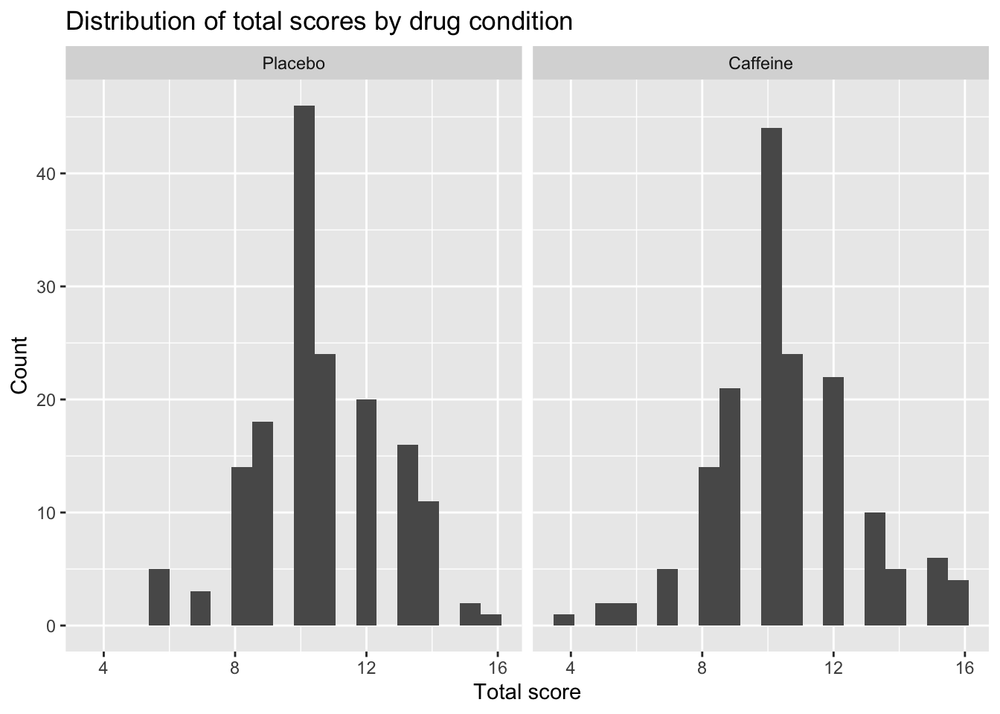
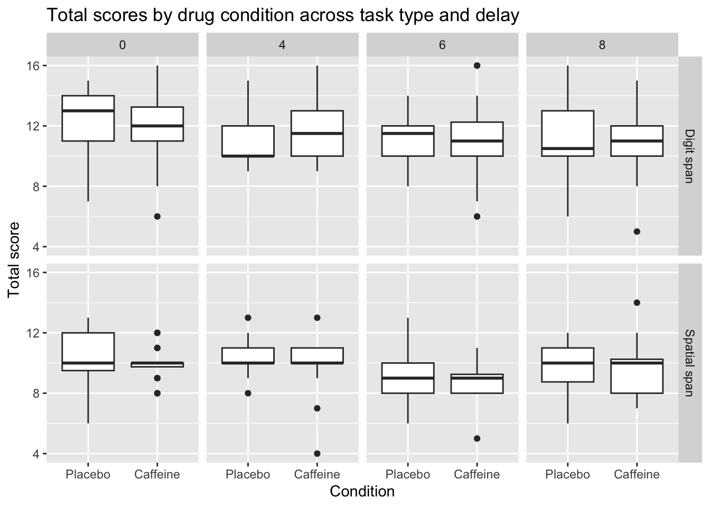

Portfolio 1
Cynthia Deng
01/31/2026
Goal
The goal of this project is to conduct a descriptive exploratory analysis of a working memory dataset examining performance under placebo and caffeine conditions. I focus on understanding how total working memory scores vary across drug condition, task type (digit vs. spatial span), and delay length.
Data
The data come from a publicly available experimental study examining the effects of caffeine on working memory performance in healthy adults. Participants completed digit span and spatial span tasks under both placebo and caffeine conditions across multiple delay intervals (0, 4, 6, and 8 seconds).Total score represents an aggregate measure of overall task performance for each participant under each condition.
Analysis
library(tidyverse)
library(tidyr)caffeine <- read_csv("p01/data/caffeine.csv")## Rows: 320 Columns: 7
## ── Column specification ────────────────────────────────────────────────────────
## Delimiter: ","
## chr (2): drug, span
## dbl (5): id, day, delay, total, max
##
## ℹ Use `spec()` to retrieve the full column specification for this data.
## ℹ Specify the column types or set `show_col_types = FALSE` to quiet this message.glimpse(caffeine)## Rows: 320
## Columns: 7
## $ id <dbl> 601, 601, 601, 601, 601, 601, 601, 601, 601, 601, 601, 601, 601,…
## $ day <dbl> 1, 1, 1, 1, 1, 1, 1, 1, 2, 2, 2, 2, 2, 2, 2, 2, 1, 1, 1, 1, 1, 1…
## $ drug <chr> "P", "P", "P", "P", "P", "P", "P", "P", "D", "D", "D", "D", "D",…
## $ delay <dbl> 0, 0, 4, 4, 6, 6, 8, 8, 0, 0, 4, 4, 6, 6, 8, 8, 0, 0, 4, 4, 6, 6…
## $ span <chr> "D", "S", "D", "S", "D", "S", "D", "S", "D", "S", "D", "S", "D",…
## $ total <dbl> 11, 8, 10, 10, 11, 8, 10, 8, 11, 9, 12, 9, 11, 5, 10, 7, 14, 11,…
## $ max <dbl> 10, 5, 10, 10, 8, 7, 9, 7, 10, 7, 11, 7, 8, 5, 9, 6, 11, 4, 10, …summary(caffeine)## id day drug delay
## Min. :601.0 Min. :1.0 Length:320 Min. :0.0
## 1st Qu.:605.8 1st Qu.:1.0 Class :character 1st Qu.:3.0
## Median :613.5 Median :1.5 Mode :character Median :5.0
## Mean :613.8 Mean :1.5 Mean :4.5
## 3rd Qu.:621.2 3rd Qu.:2.0 3rd Qu.:6.5
## Max. :628.0 Max. :2.0 Max. :8.0
## span total max
## Length:320 Min. : 4.00 Min. : 0.000
## Class :character 1st Qu.: 9.00 1st Qu.: 8.000
## Mode :character Median :10.00 Median :10.000
## Mean :10.57 Mean : 9.369
## 3rd Qu.:12.00 3rd Qu.:11.000
## Max. :16.00 Max. :16.000caffeine <- caffeine %>%
mutate(
id = factor(id),
day = factor(day),
drug = factor(drug, levels = c("P", "D")),
span = factor(span, levels = c("D", "S")),
delay = factor(delay)
)
caffeine <- caffeine %>%
mutate(
drug = recode(drug, P = "Placebo", D = "Caffeine"),
span = recode(span, D = "Digit span", S = "Spatial span")
)ggplot(caffeine, aes(x = total)) +
geom_histogram(bins = 20) +
labs(
title = "Distribution of total scores",
x = "Total score",
y = "Count"
)
The distribution of total scores is roughly unimodal, with most scores falling in a middle range and fewer observations at the low and high ends. This suggests the outcome is not extremely skewed.
ggplot(caffeine, aes(x = total)) +
geom_histogram(bins = 20) +
facet_wrap(~ drug) +
labs(
title = "Distribution of total scores by drug condition",
x = "Total score",
y = "Count"
)
When I split the histogram by drug condition, the placebo and caffeine distributions overlap substantially. Neither condition shows a completely different shape, which suggests any drug-related differences are likely modest.
ggplot(caffeine, aes(x = drug, y = total)) +
geom_boxplot(width = 0.12, outlier.alpha = 0.4) +
facet_wrap(~ span) +
labs(
title = "Total scores by drug condition and task type",
x = "Condition",
y = "Total score"
)
Across both drug conditions, total scores are higher for the digit span task than for the spatial span task, indicating better overall performance on digit span. Within the digit span task, caffeine shows a slightly higher median total score than placebo, although the interquartile ranges overlap substantially. For the spatial span task, median scores under caffeine appear slightly lower than placebo, with greater variability and several low-score outliers in the caffeine condition.
ggplot(caffeine, aes(x = drug, y = total)) +
geom_boxplot() +
facet_grid(span ~ delay) +
labs(
title = "Total scores by drug condition across task type and delay",
x = "Condition",
y = "Total score"
) Across both digit and spatial span tasks, total scores show a general decline as delay length increases, with lower performance at longer delays. This decline is modest for the digit span task but more pronounced for the spatial span task, where median scores are consistently lower and variability is somewhat greater. Within most delay conditions, the placebo and caffeine distributions overlap substantially, with only small differences in median performance. In the digit span task, caffeine shows slightly higher medians at some delays, whereas in the spatial span task caffeine tends to show similar medians compared to placebo.